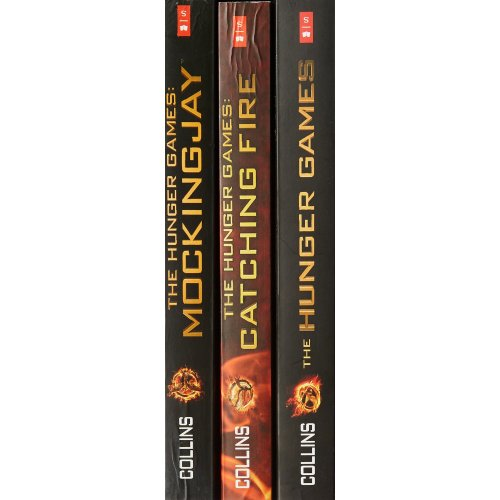

My favorite hobby is reading books. I can go to places thousands of miles away, just by the simple act of picking up a book. When I read, I feel like I'm actually in the book, facing challenges and solving mysteries alongside my favorite characters, who've slowly become my friends. On the last page of a book, when it's time to leave the unique world I enter through reading, I feel like I'm saying goodbye to my closest friends and family.
Suzanne Collins is the author of the New York Times #1 bestselling series The Underland Chronicles and The Hunger Games trilogy and its prequel The Ballad of Songbirds and Snakes. Jennifer Anne Nielsen is an American author known primarily for young adult fiction. Her works include the Ascendance Trilogy, Behind Enemy Lines, The Mark of the Thief, A Night Divided, and the Underworld Chronicles. Joanne Rowling CH, OBE, HonFRSE, FRCPE, FRSL, better known by her pen name J. K. Rowling, is a British author, philanthropist, film producer, television producer, and screenwriter.
My Favorite Books

The Hunger Games Trilogy by Suzanne Collins
“Katniss, the girl who was on fire!”

The Ascendance Series by Jennifer A. Nielsen
“A person can be educated and still be stupid, and a wise man can have no education at all.”

Harry Potter by J.K. Rowling
“Avada Kedavra!”

The Maze Runner by James Dashner
“WICKED is good
”
My Works
Click here to view my works
My Favorite Characters
Click here to view my favorite characters
My Inspirations
Suzanne Collins
 Jennifer A. Nielsen
Jennifer A. Nielsen
 J.K. Rowling
J.K. Rowling